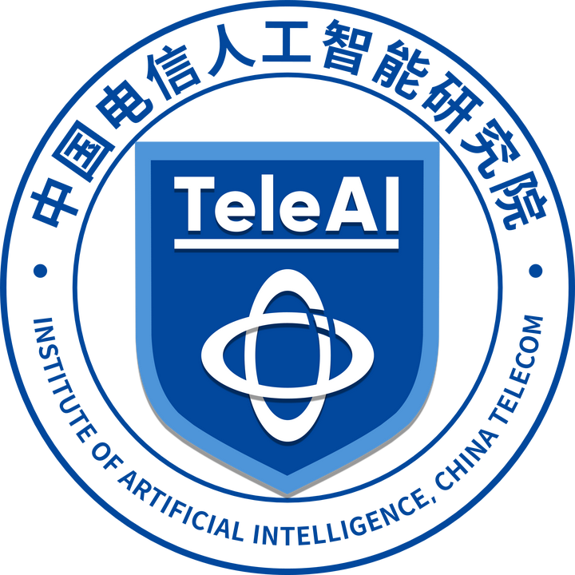
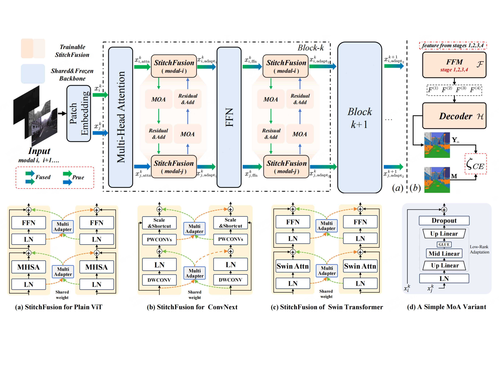
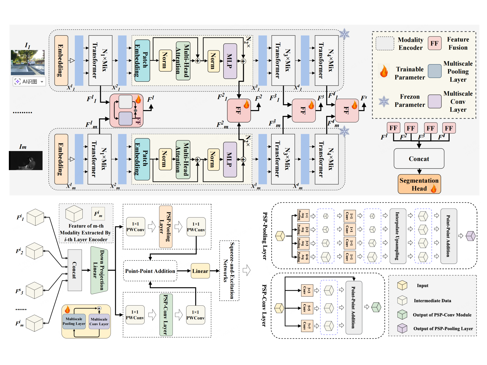
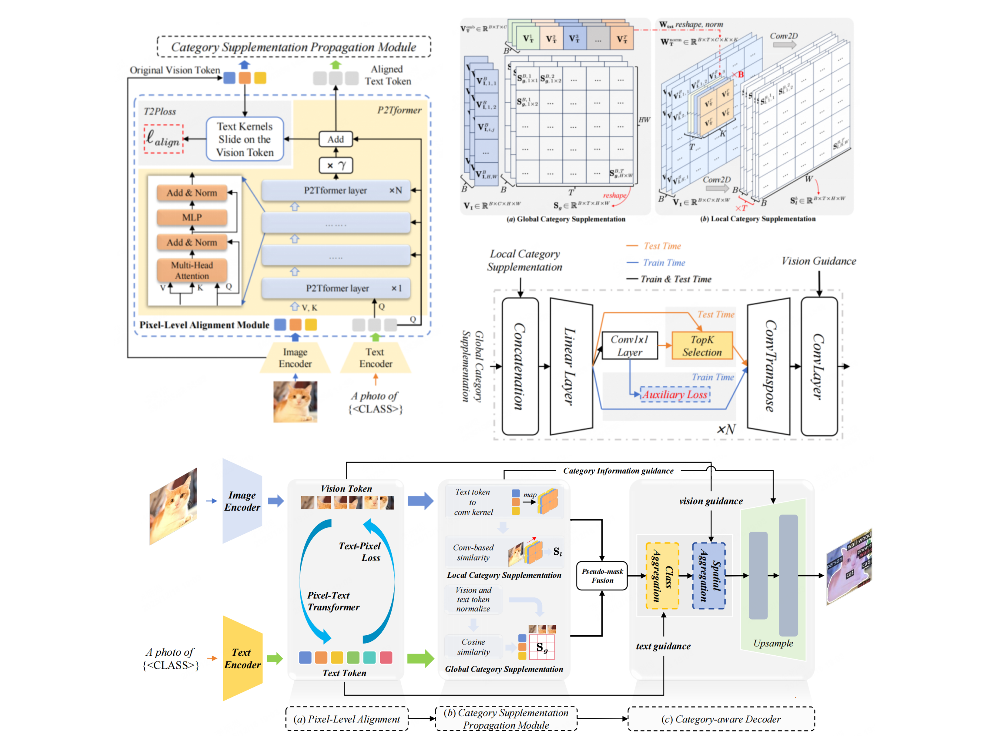
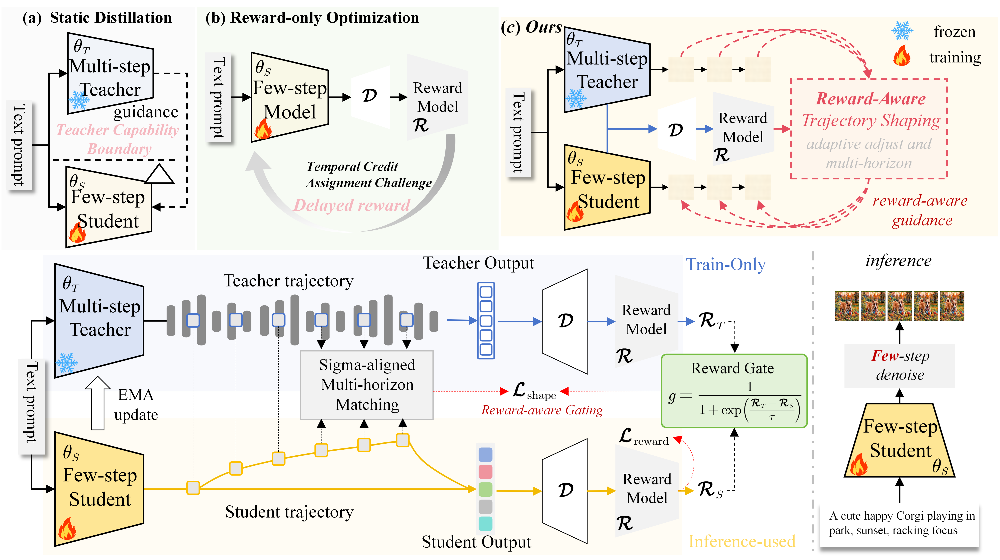

arXiv 2026
An Open-Source Benchmark and Baseline for Multi-temporal Referring Segmentation
arXiv, 2026.
I am a Ph.D. student at the University of Science and Technology of China (USTC), supervised by Prof. Xuelong Li. My research focuses on multimodal large models for visual perception and embodied intelligence and world models, connecting visual understanding with intelligent action in complex and dynamic environments.
School of Information Science and Technology
University of Science and Technology of China (USTC)
Ph.D. student.
School of Artificial Intelligence and Automation
China University of Geosciences (Wuhan)
Undergraduate study in Automation. Selected for the Li Siguang Program (李四光计划) in 2021.
School of Mechanical Engineering and Electronic Information
China University of Geosciences (Wuhan)
Freshman-year undergraduate study.

arXiv, 2026.

arXiv, 2026.

AAAI Conference on Artificial Intelligence (AAAI), 2026.

IEEE Conference on Computer Vision and Pattern Recognition (CVPR), 2026.

IEEE Conference on Computer Vision and Pattern Recognition (CVPR), 2026.

IEEE Conference on Computer Vision and Pattern Recognition (CVPR), 2026.

ACM International Conference on Multimedia (ACM MM), 2025.

Pattern Recognition, 2025.

arXiv, 2025.

ACM International Conference on Multimedia (ACM MM), 2026.
Selected academic honors, scholarships, and competition awards.
University of Science and Technology of China
China University of Geosciences (Wuhan)
Mathematical modeling and engineering competitions
Journal Reviewer: IEEE TPAMI, IEEE TNNLS, IEEE TGRS, Pattern Recognition, and related journals.
Conference Reviewer: CVPR, NeurIPS, ICLR, and other major conferences.